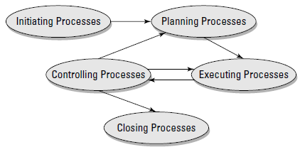
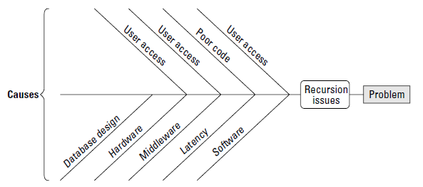
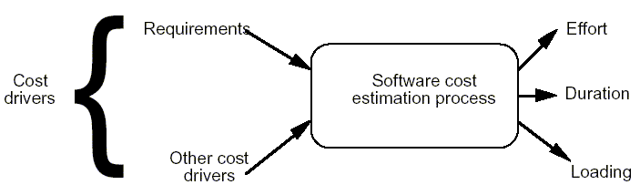
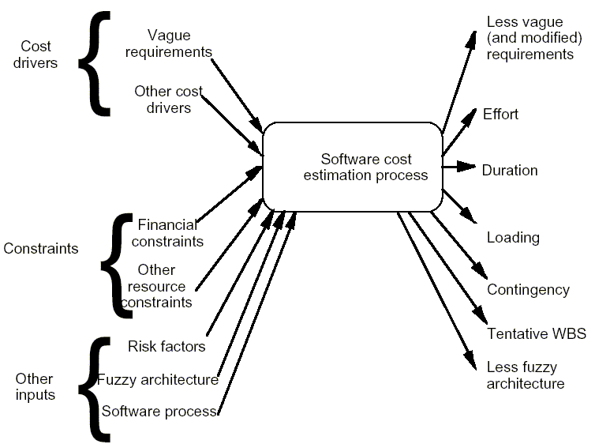

Software Project Management
Notes by S. M. Halloran
Focus is on creating & updating software. Project management focuses on 9 areas to be managed, shown in table below (these are from PMI).
| Knowledge Area | What It Does |
|---|---|
| Scope Management | Control of planning, execution, and content of the project, paying attention to project scope and product scope so that intended software is resulting software |
| Time Management | Managing schedule so that it meets deadline |
| Cost Management | All about budgeting, cost estimation, cost control |
| Quality Management | Ensuring deliverable has expected or better-than-expected quality: this may involve testing and proof of good testing |
| Human Resources Management | This is about putting together the right team and may involve hiring process. People may be employees or contractors |
| Communications Management | 90% of a PM's effort is in communicating effectively and in making sure that team members are informed |
| Risk Management | This is about anticipating risks (planning for all possible things going wrong or crises) and how to handle them |
| Procurement Management | All about engaging vendors in contracting for goods and services. |
| Integration Management | Knowledge acquired in one area affects other knowledge areas. |
Operations is a term describing day-to-day activities of an organization. These are not projects. Rather operations may be about doing projects. However some companies treat all operations as projects, and this is called management by projects.
Projects have constraints, which are usually:
There are three universal constraints on projects, forming an iron triangle
affecting quality: time, cost, and scope.
Particularly for scope there are two scopes:
Software project success usually have projects ending on time and as planned. These usually have 3 things in common:
Projects often limp to finish line, overbudget, late, and demoralizing. Done but not done well and they have three attributes:
Project failures are those never finished, missing deadlines, blowing budgets, or having changes of scope that even the PM doesn't know what is being made. Attributes are:
Process groups. This is a mini life cycle moving project one step closer to completion. They are cycles because processes happen repeatedly as needed. The figure below

These process groups are:
In developing project cost, the attempt will be to set the cost as the baseline, and then set a range comprising the variances which are acceptable low and high values. The actual cost is then tracked over time.
Projects must have purpose. At least two important questions must be asked:
Understanding the purpose is the key to asking the right questions that create the solution and solving the problem.
Important is understanding what the stakeholders want, whether customers or senior management. There are 5 questions a PM should ask stakeholders:
The project must align with the vision and specifics of the executives. Kill the project if the executives are not getting it. Executives should be questioned for the factors for success, how the result aligns with the vision, what's more important: time or budget, and the risks.
At the level of functional management (below the executive), they carry out the visions of executives. Tactics, strategy, and delivery of purpose is their role. They need to understand the what of project management. They will want or need to know details of schedule and cost and what areas of organization are affected. Several questions addressed to them are factors for success, project end date and scheduling issues, resources available for software creation, departments and customer interaction, team assembly, whether preset budget is in mind, and risks.
The people in operations are at the bottom of the organization but vital, since they do the work.
Consensus. At this point it is vital to get stakeholders in agreement of what the project is about, to find the common ground. This can be done in several ways:

Politics. There are some things to be careful of in pursuing the project:
Projects can involve solving problems, capturing opportunities, making profits, improving existing environments, speeding up or making more efficient processes. Identifying why the project is being done is important. Once that is done, the rest of the intiation can involve steps such as:
In particular the product description should be as detailed as possible or there will be headaches later. Most likely not all details will be fully understood until the project team is assembled, but as much as can be known now will help later.
Project Charter. This should identify the PM and the sponsor. It authorizes the PM to use/spend resources on the project. It contains the product description. It addresses the business need the project undertaken to represent.
The planning process is the 2nd process group. This gets the project rolling in a big way. Planning will occur mostly in the planning phase. The plan will be drafted and revised several times until there is a consensus that it is right. Approaches to planning can be the following:
Using A Worksheet. Create a spreadsheet that logs mistakes and successes, which becomes the Lessons-Learned document. It is vital to keep a record now of what goes wrong and what goes right for future projects.
The work is authorized now and the activities of the project are begun. In this process group:
Simultaneous with execution is the control of the project. This means that execution is going according to plan. Control of the projects components: quality, scope, budgets, schedule, risks.
Closing is full of activities actually, it is not the end of activity.
These are everyone with vested interest, from end user to project sponsor to team member. Be particularly attentive to stakeholders concerned about cost and return on investment. At the initiation, there has not been a real idea of cost. Don't commit to any number or else you can be held to it. If they insist, come up with a reasonably high value that might be the upper limit on budget variance.
Generally the feasibility study looks at the constraints on the project, examining details of scope and looking at issues. As PM, the role may be to list the facts to someone and let them determine feasibility.
These studies do require time and resources though, and they may not be available, so no feasibility is done.
For large projects it is worth the effort: they save time and money and they do a good job of bringing out what the risks are, which must be identified in project planning phase anyway.
Feasibility studies are not research papers as they only explore the chance of a project for success. They are not used to promote points of view but look at the project neutrally, dispassionately. Alternative ideas should be presented along with the merits and pitfalls of the project. These studies do not try to elicit more time and funds for a project either: if management pushes a hard deadline or scrimps on money, a risk should be identified. Most importantly a feasibility study does not promote or discourage the project, but just presents facts.
Generally feasibility studies are conducted by a business analyst or consultant or subject matter expert (SME). Outsiders have nothing at stake so might possibly be more objective. SMEs can be found by a variety of means, but one is referrals from colleagues. Consultants should have experience in the technology, not just in doing studies. Consultants should listen to stakeholders, all of them, before reporting out their work. The SME should also be involved with the project rather than remaining at a distance.
With limited capital and need to prioritize time, some projects go ahead of others and many go nowhere. Projects in a queue get selected in one of two ways:
The benefit comparison model basically selects the project with the (most number of) best attributes. A scoring model might be used (see sample table below)
| Project | Experience | Schedule | Cost | Portfolio | Final Score |
|---|---|---|---|---|---|
| Project ABC | 10 | 5 | 3 | 8 | 26 |
| Code & Code Project | 4 | 9 | 4 | 6 | 23 |
| Web App Project | 7 | 2 | 9 | 7 | 25 |
| Patch & Fix Project | 7 | 6 | 5 | 2 | 20 |
The highest scoring projects usually get launch.
Facing Murder Board. These are committees who are designed to be the devil's advocate on a project. They probe for project weaknesses. It also sizes up the PM, favoring those who work well under pressure. To prepare for the committee, come up with questions thought to be asked and have ready answers for them.
The ROI. All projects expect a return on investment. There should be a very clear calculation (or estimate) about the earned value. The result of the project should be greater than the costs expended doing the project. The present and future values must be compared: this comparison is what the company would benefit if it had just invested the money on the project into an interest-bearing account instead. Use this formula:
future value = present value × (1 + i)n
If someone claims that 5 years from now a deliverable will be worth $275,000. Suppose there is a 6% interest rate. This means that the present value is $205,000. Thus if a project costs more than $205,000, it is better to leave the money to collect interest.
Software is delivered in stages or versions. With each release, the organization hopes that the net value is increased. The net present value which is greater than zero promises at least some profit. Computation is shown in the table below for software that has a yearly release. The steps are:
| Year | Future Value | Present Value |
|---|---|---|
| 1 | $35,000 | $33,019 |
| 2 | $48,000 | $42,720 |
| 3 | $81,000 | $68,009 |
| Sum PV values | $143,748 | |
| Investment | $97,000 | |
| NPV (Sum of PV values − Investment) | $46,748 | |
The NPV will be a decision tool for helping in deciding what projects get cut first. They are really used for determining which projects are worth the time.
This is written in the initiation phase because it accurately says what the project creates. It is put down on paper to remind everyone of the goal. Description is about the deliverables, the function of the deliverablse, and how product affects organization. This is the product scope. Note it is not the project scope!
A good product scope defines or describes the following:
Statement of Work (SOW). In working with a vendor, a contract will be developed and in the contract is a Statement of Work which is included in the product description. More about the SOW and contracts with vendors is described later
With a project about to begin, make a mental checklist: what's needed, who will be on the team, resources to gather.
Tools. Few projects get done without tools. These might be hardware, such as faster processors, two monitors. Or compilers for language to produce the software. These will be among the following:
PMs may already have a team in place they like from past projects. Or they may get to cherry-pick from among the personnel. Others get team based on who is available.
Good teams have people with people skills and technical competence. Teams are built in four phases usually:
Be careful here. Write specifications for the contract that are well developed and revised. Create an algorithm of selection that avoids the appearance of favoritism or nepotism. Vendors must have the right combination of talent, experience, and competitive price.
The project sponsor must sign off on the charter after initiation is done. The sponsor should be high up the command chain. The sponsor should have authority over all resources in the project. If the manager of a team member will not make the team member avialable, then it is important to have as a sponsor someone with authority over the manager to be overruled.
Product scope is knowing what the essential ingredients of the product are. Once the product scope is agreed to, then project scope can be detailed. Product scope helps define what a customer sees in the product. Project scope is what the PM focuses on with respect to the work plan.
Stakeholder analysis. All stakeholders and their roles and responsibilities must be understood. A project requires a minimum set of roles and responsibilities, and the people who have them must exist. Be sure to develop a list of questions that must and should be answered to get the project result done right:
While the stakeholder should be allowed to express himself freely, make sure that questions are asked in getting answers for project planning.
There will be competing interests about how the software will emerge in the end. The important thing is to nail stakeholders down as to what the product should be and reinforce the idea that the version that emerges should be the one that ends the project if it was developed as planned.
The following conflicts have been ranked in order of frequency at PMI:
Identifying conflicts is one thing, settling them is another. There are 5 approaches that generally work:
This is the determination of the effort used for the project. The values for this will be given in man/person-months or man/person-years.
Cost estimation is done throughout project life cycle. First is done at beginning when requirements are outlined, and it may be frequently revised before project start. Continuing estimates result because more data become available. With projects, re-estimates are done with the idea that they eventually converge with actual cost. However, with vendors, one has to get it right: one cannot look over the shoulder of the vendor throughout the project to see the vendor is saving money and will pass the savings to the project.
A historical approach to estimation would be comparing similar projects done in the past. Estimations should be done by outsiders but they do not have some intimate knowledge of the organization that may help the estimate. Outside estimators will probably use empirical methods (COCOMO).
This is the first step in estimation is to produce a Cost Estimate Plan. The plan indicates the data to be obtained, why it is obtained, and the goal for the cost estimation. When the data determination is made, this sets the metrics level of detail for cost estimation. Data that is not specified for gathering should not be obtained since it is a waste of time.
In the 2nd step cost estimation is done based on requirements. Project decomposition can be done if a lower level of abstraction needed for data. Use more than one method of estimation since there is no perfect technique. If there are wide variances from the different method estimates, re-evaluate the information used to make the estimates.
Results of cost estimation cannot be understood if the process is not understood. The process is a set of techniques and procedures used to derive the cost estimate. Most models consider models who estimation of cost is a function of the cost drivers. The primary cost driver (or most important) is believed to be the software requirements. A cost driver will be anything that affects the cost of the software: design methodology, skill levels, risk assessment, experience of personnel, which programming language used, complexity of system.
In the classical view of the estimation process, three outputs are generated (see figure below)

But the actual process is more complex or richly detailed. The inputs are not only cost drivers having vague requirements of the software and other factors, but also the constraints both financial and in resources as well as risk factors, fuzzy architecture, and the software process. Cost estimation often requires using an existing architecture or software in place. Experienced estimators detect ambiguities and inconsistencies in all requirements, which might be solved by modifying the requirements. Any ambiguous and inconsistent requirements remaining unsolved affect estimation accuracy.

First the measure of performance of the accuracy of the cost estimation model is based on certain parameters:
Absolute error fails to take into account the size of the project, and the mean magnitude of relative error masks systematic bias, meaning one does not know if the estimation is over or under.
Here a set of mathematical equations are used to arrive at cost estimation. These equations combine theory supported by historical data. The inputs are source line of code (SLOC), function points, and other cost drivers. Calibration based on the software environment can be used to improve the estimation. Examples are COCOMO, COCOMO II, Putnam's software life cycle model (SLIM). There are advantages and disadvantages with this approach:
The knowledge and experience of the estimator are taken in these techniques and based on similar projects in which they participated. Delphi, Wideband Delphi and Work Breakdown Structure (WBS) are examples.
Refinement of typical agile estimating techniques using minimal measurement and total time accounting.
Founders of Commercial Parametric models that estimates the scope, cost, effort and schedule for software projects.
(from the Personal Software Process)
(from Extreme Programming)
posted: dd MMM yyyy